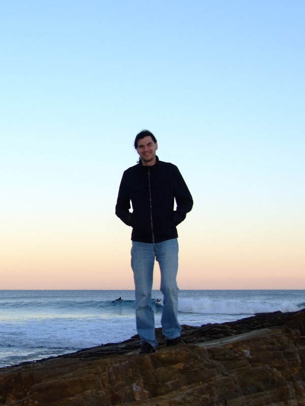

About me
 I am a computational linguist working as a postdoctoral researcher at FAU Erlangen-Nürnberg. Most of my work is in the areas of natural language processing (“How can we make a computer do useful things with texts?”), corpus linguistics (“What can we learn about language using a computer and a large collection of texts?”) and digital humanities (“How can computational methods help in the humanities, e.g. literary studies, political science or sociology?”). I deeply care about both methodology and practical implementation. This means there is a strong focus on understanding and evaluating established methods (e.g. “How do Delta measures for authorship attribution work?”, “Which method yields the best word combinations for inclusion in a dictionary?”) and on developing novel methods (“How can we measure the statistical association between arbitrary linguistic constructions?”). At the same time, I build software solutions (e.g. for identifying word and sentence boundaries in noisy web and social media texts and labeling each word with its word class) that combine expert knowledge with rule-based approaches, traditional machine learning and deep learning.
Feel free to browse these pages to learn more about my research and teaching activities.
Contact
Dr. Thomas Proisl
Friedrich-Alexander-Universität Erlangen-Nürnberg
Lehrstuhl für Korpus- und Computerlinguistik
Bismarckstr. 6
91054 Erlangen
Germany
E-mail: thomas.proisl@fau.de
Phone: +49 9131 85-25908
Fax: +49 9131 85-29251
Note: Due to the ongoing pandemic, I am mostly working from home. The best way to contact me is via e-mail.
GitHub · LinkedIn · Xing · Google Scholar